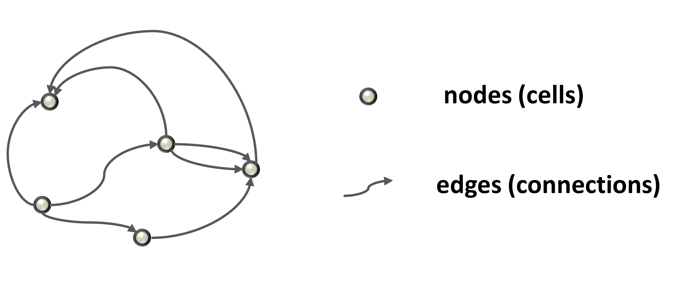
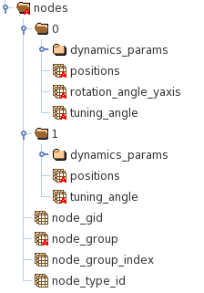
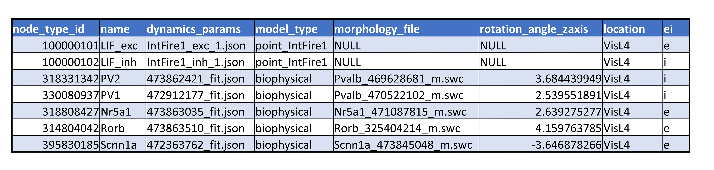
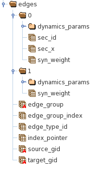
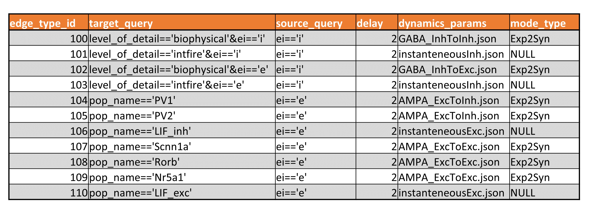

Network file formats#
A network can be viewed as a graph (Figure 1) that is fully described by specifying the properties of the nodes and edges.
{kind=link}
Figure 1. Graph is described by the properties of the nodes and edges.
In order to make the description more concrete we will be using the 14 cell example network found in examples/simulators/bionet.
Nodes#
When describing properties of nodes, it is convenient to introduce the notion of the node type, which may include multiple properties depending on a particular application. Each node then belongs to a particular node type, thus possessing all of the properties of that node type, but in addition possessing properties specific to that individual node. The node type may correspond to the biological cell-type or be based on a different set of properties convenient for parsimonious description of simulated nodes. The information unique to individual nodes is saved in the HDF5 file format and about node types in the CSV file.
The HDF5 file may include nodes utilizing multiple types of cell models that are described by different number of parameters. The HDF5 file utilizes groups to group properties of nodes described by the same set of attributes. For example in Figure 2, group “0” includes properties of the biophysically detailed neurons and group “1” of LIF neurons:
{kind=link}
Figure 2. The structure of the HDF5 file containing properties of the nodes.
Each node has a few mandatory properties (datasets):
node_gid : a unique node identifier,
node_group : defines the group to which node belongs
node_group_index : index in the datasets inside the node_group (“0” or “1” in Figure 2) containing node properties.
node_type_id : a unique identified of the node type that is used to access additional node properties from the node_types file.
The node types file uses the CSV format. Each node_type uses the same number of attributed as shown in Figure 3 below.
{kind=link}
Figure 3. An example of the node types CSV file.
The mandatory columns include:
node_type_id : a key identifying a node type
dynamics_params : a file describing dynamical properties of a cell model
morphology_file : a file describing cell morphology,
model_type : identifies a specific dynamical model of a cell.
Then there could be also optional columns such as “rotational_angle_zaxis”, “location”,etc.
The optional properties could be included either in the HDF5 file or in the CSV file depending on whether they are specific to each node or node type.
Edges#
Similarly to nodes, in order to allow for describing edges at various levels of detail, we introduce the concept of an edge type. Each connection thus belongs to a particular edge type and possesses all properties of that type, as well as individual properties. The edge type may correspond to the synaptic connections between biological cell-types or can even be defined to conveniently represent common properties of connections for a particular network model. These common connection properties are designated as attributes of an edge type and stored in the edge type file in the CSV format, whereas properties specific to the individual edges are stored in the HDF5 file.
The HDF5 edges file may include edges utilizing multiple types of synaptic model types that are described by different number of parameters. The HDF5 file utilizes groups to group properties of edges described by the same set of attributes. For example in Figure 4, group “0” includes properties of synapses onto biophysically detailed neurons and group “1” onto LIF neurons.
{kind=link}
Figure 4. The structure of the HDF5 file containing properties of the edges.
Each edge has a few mandatory properties (datasets):
node_group : defines the group to which node belongs
node_group_index : index in the datasets inside the node_group (“0” or “1” in Figure 2) containing node properties.
edge_type_id : a unique identified of the edge type that is used to access additional node properties from the edge types CSV file.
source_gid/target_gid : node_gids of a source and target cells connected with the edge
To provide a fast loading of edges connecting to a particular node, it is convenient to store nodes sorted by the target_gid. Then one can use an additional index_pointer array that provides the start and the end indexes in the datasets as follows:
start_index = index_pointer[target_gid]
end_index = index_pointer[target_gid+1]
The edge types file uses the CSV format. Each edge_type has the same number of attributed as shown in Figure 6 below.
{kind=link}
Figure 6. An example of the edge types CSV file.
The mandatory columns include:
the edge_type_id : a primary key identifying an edge
dynamics_params : a file describing dynamical properties of a synaptic model
model_type : identifies a specific dynamical model of a synapse.
The target_query and source_query fiels are optional reserved attributes and provide an information describing the selection of target and source cells describied by this edge type.
The optional properties could be included either in the HDF5 file or in the CSV file depending on whether they are specific to each edge or edge type. For instance, for networks edged in Figure 6 the “delay” column describing the conduction delay property is specified in the edge type meaning that all edges of a particular edge type will have an identical “delay” value. However, for other networks the “delay” property may be specific for each edge, in which case the “delay” will be stored in the HDF5 file.